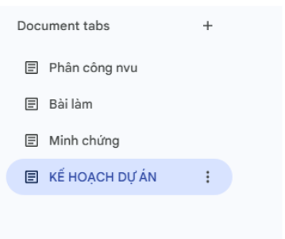

Họ tên sinh viên: Nguyễn Quốc Cường
Vai trò trong nhóm: Tìm hiểu số liệu ung thư toàn cầu & VN, Tổng hợp báo cáo cá nhân
Tên dự án: AI trong ung thư học – Từ chẩn đoán chính xác đến phẫu thuật thông minh
Thời gian thực hiện: Tuần 1 (7/4 – 14/4/2026)
Nhóm tôi gồm 5 thành viên, thực hiện dự án nghiên cứu và thiết kế slide thuyết trình về ứng dụng của AI trong ung thư học. Chúng tôi sử dụng bộ công cụ tối giản nhưng đáp ứng đủ 3 nhóm chức năng theo yêu cầu.
| Nhóm công cụ | Tên công cụ | Mục đích sử dụng |
|---|---|---|
| Soạn thảo cộng tác + Quản lý nhiệm vụ | Google Docs | Viết nội dung, tạo bảng phân công, theo dõi tiến độ |
| Lưu trữ & chia sẻ file | Google Drive | Lưu slide, tài liệu tham khảo, phân quyền truy cập |
| Giao tiếp nhóm | Zalo + Google Meet | Thảo luận hằng ngày, họp trực tuyến, nhắc deadline |
➡ Tôi đã tham gia thiết lập và sử dụng cả 3 nhóm công cụ.
Dự án của nhóm được chia thành các phần chính dựa theo cấu trúc của slide:
| Phần | Nội dung |
|---|---|
| 1 | Vấn đề ung thư toàn cầu (số liệu VN và thế giới) |
| 2 | AI phát hiện khối u trên ảnh (CADe/CADx, CHIEF 94%, PathChat 90%) |
| 3 | AI Agent & NLP (phân loại bệnh nhân, tóm tắt bệnh án, chatbot Zalo) |
| 4 | AI định vị ranh giới u trong mổ (Robot Modus V Synaptive) |
| 5 | Thách thức của AI (chi phí, dữ liệu training, dương tính giả, trách nhiệm pháp lý) |
| 6 | Giải pháp (PPP, Federated Learning, AI-as-a-Service, kho dữ liệu ung thư VN) |
| 7 | Tương lai & kết luận |
Tôi đã tạo một bảng phân công nhiệm vụ ngay đầu file Google Docs chung của nhóm. Bảng có 5 cột: STT – Nhiệm vụ – Người phụ trách – Deadline – Trạng thái.
| STT | Nhiệm vụ | Người phụ trách | Deadline | Trạng thái |
|---|---|---|---|---|
| 1 | Tìm hiểu số liệu ung thư toàn cầu & VN | Nguyễn Quốc Cường | 7/4 | ✅ Đã hoàn thành |
| 2 | Tổng hợp các ứng dụng AI phát hiện khối u (CADe, CHIEF, PathChat) | Lưu Gia Bình | 7/4 | ✅ Đã hoàn thành |
| 3 | Viết phần Thách thức của AI (chi phí, dữ liệu, dương tính giả, pháp lý) | Nguyễn Hoàng Văn | 9/4 | ✅ Đã hoàn thành |
| 4 | Viết phần Giải pháp (PPP, Federated Learning, AI-as-a-Service) | Lâm Tuấn Đạt | 9/4 | ✅ Đã hoàn thành |
| 5 | Viết phần Tương lai & Kết luận | Lê Gia Bảo | 10/4 | ✅ Đã hoàn thành |
| 6 | Tổng hợp slide Canva / PowerPoint | Cả nhóm | 12/4 | ✅ Đã hoàn thành |
| 7 | Tổng hợp báo cáo cá nhân bài tập 1 | Nguyễn Quốc Cường | 14/4 | ✅ Đã hoàn thành |
Tôi đã cập nhật trạng thái nhiệm vụ ít nhất 3 lần trong tuần (từ "⏳ Chưa bắt đầu" → "🔄 Đang thực hiện" → "✅ Đã hoàn thành").
Tôi đã trực tiếp viết phần "Thách thức của AI" dựa trên nội dung từ slide (trang 7-9), bao gồm:
Tôi cũng chỉnh sửa, bổ sung phần "Giải pháp" dựa trên góp ý của các thành viên.
Tôi đã thiết lập cấu trúc thư mục trên Google Drive như sau:

| Công cụ | Hiệu quả với cá nhân tôi |
|---|---|
| Google Docs | Vừa viết nội dung chuyên sâu (thách thức của AI) vừa theo dõi tiến độ nhóm. Lịch sử phiên bản giúp tôi không sợ mất nội dung khi chỉnh sửa. |
| Google Drive + Canva + Kiwi AI | Lưu trữ slide gốc và tài liệu tham khảo tập trung, dễ tìm kiếm. |
| Gemini + Deepseek + GPT | Đa dạng tác vụ AI, tìm kiếm nguồn thông tin đa dạng |
| Zalo + Google Meet | Zalo phù hợp nhắc deadline nhanh và gửi file. Google Meet phù hợp họp có cấu trúc, chia sẻ màn hình slide. |
Ưu điểm lớn nhất: Nhóm thống nhất được một không gian làm việc chung, tránh tình trạng mỗi người gửi file qua lại lộn xộn.
Nhược điểm: Google Docs không tự động nhắc deadline. Tôi phải chủ động nhắc nhở qua Zalo.
| Thách thức | Cách tôi giải quyết |
|---|---|
| 1. Thành viên hiểu sai nội dung AI trong slide (ví dụ: nhầm CHIEF với PathChat) | Tôi tạo một mục "Chú thích thuật ngữ" ngay đầu Google Docs, giải thích rõ CHIEF (Harvard, Nature 2024), PathChat (Đại học Y Harvard, 2024), CADe/CADx (Bệnh viện 199). Sau đó tag từng người vào Zalo để đọc. |
| 2. Xung đột khi hai người cùng sửa một đoạn trong Google Docs | Tôi yêu cầu cả nhóm chuyển sang chế độ Suggesting (gợi ý) thay vì Editing. Tôi – với vai trò nhóm trưởng – sẽ duyệt hoặc từ chối các đề xuất. |
| 3. Một thành viên không có laptop để họp Google Meet | Tôi đề nghị thành viên đó tham gia bằng điện thoại, đồng thời cử một người ghi biên bản trực tiếp trên Google Docs để họ có thể đọc lại sau. |
Tôi xin cam đoan các ảnh chụp màn hình kèm theo là minh chứng trung thực cho quá trình làm việc cá nhân của tôi trong dự án nhóm này.
📅 Ngày 10 tháng 4 năm 2026 | Môn: Nhập môn Công nghệ số & Ứng dụng Trí tuệ nhân tạo | MSSV: 25022799